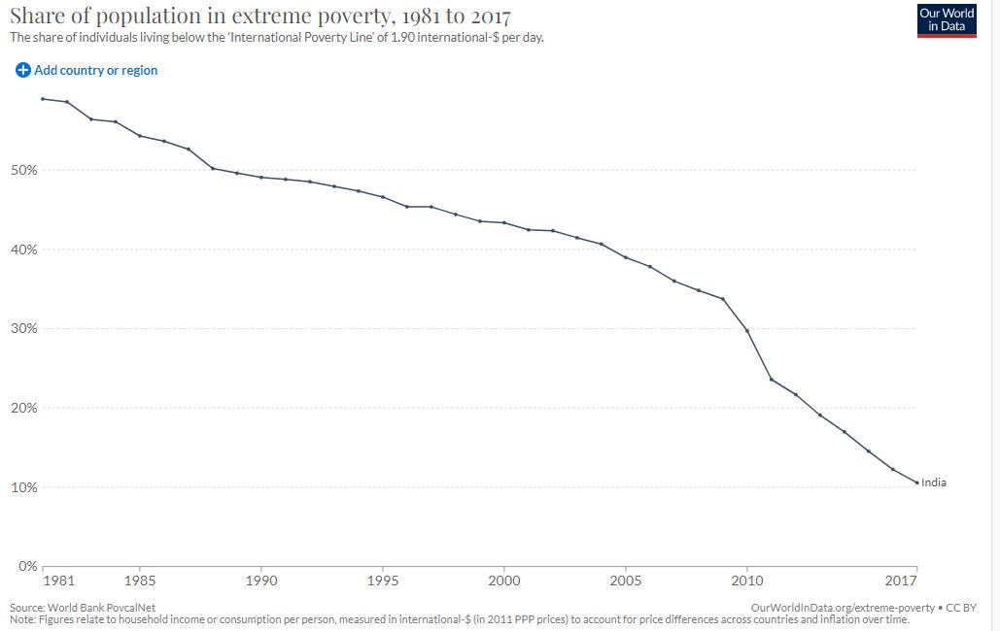

Poverty in India
Poverty in India remains a major challenge despite overall reductions in the last several decades as its economy grows. According to an International Monetary Fund paper, extreme poverty, defined by the World Bank as living on US$1.9 or less in purchasing power parity (PPP) terms, in India was as low as 0.8% in 2019, and the country managed to keep it at that level in 2020 despite the unprecedented COVID-19 outbreak.

According to the World Bank, India experienced a significant decline in the prevalence of extreme poverty from 22.5% in 2011 to 10.2% in 2019. A working paper of the bank said rural poverty declined from 26.3% in 2011 to 11.6% in 2019. The decline in urban areas was from 14.2% to 6.3% in the same period. The poverty level in rural and urban areas went down by 14.7 and 7.9 percentage points, respectively.

According to United Nations Development Programme administrator Achim Steiner, India lifted 271 million people out of extreme poverty in a 10-year time period from 2005–2006 to 2015–2016. A 2020 study from the World Economic Forum found "Some 220 million Indians sustained on an expenditure level of less than Rs 32 / day—the poverty line for rural India—by the last headcount of the poor in India in 2013."

The World Bank has been revising its definition and benchmarks to measure poverty since 1990–1991, with a $0.2 per day income on purchasing power parity basis as the definition in use from 2005 to 2013. Some semi-economic and non-economic indices have also been proposed to measure poverty in India. For example, in order to determine whether a person is poor, the Multi-dimensional Poverty Index places a 33% weight on the number of years that person spent in school or engaged in education and a 6.25% weight on the financial condition of that person.
The different definitions and underlying small sample surveys used to determine poverty in India have resulted in widely varying estimates of poverty from the 1950s to 2010s. In 2019, the Indian government stated that 6.7% of its population is below its official poverty limit. Based on 2019's PPPs International Comparison Program, according to the United Nations Millennium Development Goals (MDG) programme, 80 million people out of 1.2 billion Indians, roughly equal to 6.7% of India's population, lived below the poverty line of $1.25 and 84% of Indians lived on less than $6.85 per day in 2019.
According to the second edition of the Multidimensional Poverty Index (MPI) released by Niti Aayog, approximately 14.96% of India's population is considered to be in a state of multidimensional poverty. The National Multidimensional Poverty Index (MPI) assesses simultaneous deprivations in health, education, and standard of living, with each dimension carrying equal weight. These deprivations are measured using 12 indicators aligned with the Sustainable Development Goals (SDGs). On July 17, 2023, Niti Aayog reported a significant reduction in the proportion of poor people in the country, declining from 24.8% to 14.9% during the period from 2015–16 to 2019–21. This improvement was attributed to advancements in nutrition, years of schooling, sanitation, and the availability of subsidized cooking fuel. As per the report, approximately 135 million people in India were lifted out of multidimensional poverty between 2015–16 and 2019–21.
From the late 19th century through the early 20th century, under the British Raj, poverty in India intensified, peaking in the 1920s. Famines and diseases killed millions in multiple vicious cycles throughout the 19th and early 20th centuries. After India gained its independence in 1947, mass deaths from famines were prevented. Since 1991, rapid economic growth has led to a sharp reduction in extreme poverty in India. However, those above the poverty line live a fragile economic life. As per the methodology of the Suresh Tendulkar Committee report, the population below the poverty line in India was 354 million (29.6% of the population) in 2009–2010 and was 269 million (21.9% of the population) in 2011–2012. In 2014, the Rangarajan Committee said that the population below the poverty line was 454 million (38.2% of the population) in 2009–2010 and was 363 million (29.5% of the population) in 2011–2012. Deutsche Bank Research estimated that there are nearly 300 million people who are in the middle class. If these previous trends continue, India's share of world GDP will significantly increase from 7.3% in 2016 to 8.5% by 2020. In 2012, around 170 million people, or 12.4% of India's population, lived in poverty (defined as $1.90 (Rs 123.5)).
Strategies to Combat Poverty
Effective strategies to combat poverty include education, economic development, and social support programs. Learn more about these strategies in this comprehensive guide.
Combating poverty is a complex challenge that requires a multifaceted approach. Here are several key strategies:
Economic Strategies
Job Creation:
Encourage investments in sectors that can create jobs, such as manufacturing, agriculture, and technology.Microfinance and Small Business Support:
Provide microloans and financial services to small businesses and entrepreneurs.Fair Trade Practices:
Promote fair trade to ensure that producers in developing countries get fair prices for their products.
Education and Skills Development
Access to Education:
Ensure that all children have access to quality education, including vocational training and higher education.Adult Education and Training:
Provide education and skills training programs for adults to enhance their employability.
Healthcare
Universal Healthcare:
Implement universal healthcare systems to ensure that everyone has access to medical services.Nutrition Programs:
Develop programs to combat malnutrition, particularly among children and pregnant women.
Social Safety Nets
Social Welfare Programs:
Implement social welfare programs such as unemployment benefits, pensions, and food assistance.Conditional Cash Transfers:
Provide financial support to poor families on the condition that they meet certain criteria, such as ensuring their children attend school and receive vaccinations.
Poverty and Its Impact on Children
Poverty significantly affects children, influencing their physical health, emotional well-being, educational opportunities, and overall development. Here are some key ways poverty impacts children:
Physical Health:
Malnutrition:
Children in poverty often lack access to sufficient, nutritious food, leading to stunted growth, weakened immune systems, and higher susceptibility to diseases.Poor Living Conditions:
Inadequate housing, lack of clean water, and poor sanitation can lead to chronic illnesses and infections.Limited Access to Healthcare:
Families in poverty may not afford medical care, resulting in untreated illnesses and inadequate preventive care.
Educational Opportunities:
Access to Education:
Poverty can limit access to quality education due to costs, lack of schools, or need for children to work.School Performance:
Hunger, stress, and lack of resources can affect concentration, attendance, and academic performance.Early Development:
Limited access to early childhood education and developmental programs can hinder cognitive and social development.
Social Development
Social Exclusion:
Children in poverty may face social exclusion and discrimination, impacting their ability to form healthy relationships.Limited Extracurricular Activities:
Financial constraints often mean fewer opportunities to engage in sports, arts, and other enrichment activities.Increased Responsibilities:
Older children in impoverished families may have to take on adult responsibilities, such as caring for siblings or working, which can affect their social life and development.
Long-Term Consequences
Intergenerational Poverty:
Children growing up in poverty are more likely to remain in poverty as adults, perpetuating a cycle of disadvantage.Health Problems:
Chronic health issues from childhood can persist into adulthood, affecting overall quality of life and economic stability.Educational Attainment:
Lower educational attainment due to poverty can limit career opportunities and earning potential.